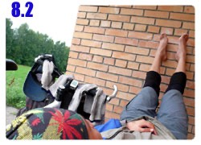

雖然說住在旅館裡，但實際的睡眠時間跟睡在野外差不多。
待在舒適的房間內，一堆事情等待處理，凌晨兩點多才入睡，六點多又爬起來接著整理中英文的遊記。
找旅館好像不只是為了可以洗澡、洗衣服，同時也是為了替寫遊記尋覓一個能夠熬夜的地方。
中午之前終於將手頭上累積等待排版的英文遊記全部弄完，多虧翻譯高手們的大力相助，目的進度已經到哈薩克的第一天了。
在餐廳整備小多時，旅館的一隻小貓不停地在小多身上嬉戲、在包包上跳上跳下、咬著鋼絲、拍打輪胎。
離開旅館的時候昨天一起吃飯的朋友拿了一瓶水送給我，一樣是氣泡式礦泉水，自己花錢買覺得很難喝，拿別人送的，喝起來格外爽口。
十一點多開始騎車，每天的目標都是一百公里突破即可，到時候看那邊是城鎮還是荒野再決定過夜的問題。
將近中午出發的話，抵達的時間都是晚上九點左右，剛出發就推算出這個時間，一瞬間就覺得很沒力，得騎這麼久呀～
一路上沒拍什麼照片，跟哈薩克不同，俄羅斯的綠地和田園很多，沿路都是起伏的山坡地和大規模開墾的農地。
下午一點多到商店去晃晃有什麼東西可以購買，包包裡的糧食還很多，可是看到純正經營的商店都會覺得不買些什麼有點可惜。
裡頭的商品數量極多，簡直就像一間超級市場，買了基本的餅乾和飲料之外，看見桌上擺著類似牛奶的東西。
中國也有賣這樣的塑膠袋牛奶，只是沒有這麼大一包，詢問過店員說這是牛奶沒錯吧？
店員說是牛奶，但是額外又說了很多聽不懂的話，最後買了左下角那一包，標價才十塊錢而已，買錯就算了。
咬開一個小孔，要喝之前還跟自己說不要太相信這是牛奶，萬一喝進嘴裡的味道天差地遠的話，那會很想吐。
吸一小口，相當濃稠的口感，味道微酸，這個應該是優酪乳吧@@"
又買錯了，離開中國之後就沒喝過牛奶，只能喝些奶茶、咖啡牛奶當做代替。
下午兩點半，昨天沒睡飽的影響開始浮現，精神渙散、眼神飄移、雙腳無力，腦袋處於白日夢狀態。
既然這麼愛睏那就別勉強騎車，找地方好好休息一下，每隔幾公里就會出現的公車等候站是首選。
脫掉鞋襪、也卸下小多的重擔，拿睡袋當做枕頭，躺在半露天的椅子上大睡一覺。
這個椅子太短了，腳沒地方伸直，只好抬得高高地靠在牆面上，正好可以促進血液循環，睡覺的時候讓雙腳也休息一下。
在這邊睡了整整一個小時，直到太陽繞過屋頂直射在臉上，熱得受不了的時候才離開。
沿路上施工的情況很常見，若有封閉的車道那我就很爽地一個人騎在上面，不然只好跟大卡車為伍，期盼司機大叔會好心的讓路給我。
除了農地之外，放牧在俄羅斯也很常見，這邊有好多隻的牛在吃草，黑白相間的應該是乳牛。
不知道是天氣熱還是牛愛乾淨，好多隻都泡在水裡面，看起來就很舒服的樣子。
我心目中最佳的露營場所就是在乾淨的小溪旁，這樣睡前就可以用溪水擦洗，睡醒也能用冰涼的水洗把臉，這樣的夢幻場所何時才能找到呢？
馬路比較寬闊或是有小鎮的交叉路口出現時，常常會看到農家的人在路邊賣些農產品。
幾乎都是在賣蘋果，其它還有馬鈴薯、洋蔥、小黃瓜這些，大多都是農婦騎著自行車從鎮上拿到路邊販售。
抵不住嘴饞又不想老是吃餅乾跟巧克力，靠過去想買些新鮮的水果吃。
拿了兩個五塊的硬幣給老婆婆，她很傷腦筋地不知道這點錢該賣多少蘋果給我？
其實買太多我也吃不下，攜帶一堆食物在身上也很累。
只想換個口味吃不一樣的東西，跟老婆婆說只要給我一點點就好了，她就挑了五顆紅蘋果給我。
這邊同時也販賣著各式菇類，邊騎車邊吃香菇不太搭調，還是啃蘋果吧。
六點半的時候又進入休息區，臉上流汗又吸附大卡車的黑煙非常不舒服，停靠在這間餐廳的時候只想好好地把臉洗乾淨。
洗臉當然是沒問題，有膽子脫光的話，要在裡面洗澡都可以，但是洗好臉之後就捨不得馬上騎車上路，
半自助式的點餐區擺放著各式各樣的美食，看得我口水直流，本來不覺得餓的肚子，突然就變得飢腸轆轆。
回想一下今天吃過的東西，還沒有可以稱為正餐的食物，既然這樣就在這裡吃頓飯吧。
自己拿了餐盤夾了一塊漢堡肉，上面放著融化的起司和番茄，再加上一隻烤雞腿，價錢貼紙都標在上面。
這兩個食物餐廳的阿姨會拿去加熱，又弄了一盤馬鈴薯泥淋上肉醬汁，自己再泡一杯熱可可，大餐準備完畢。
要讓心情放鬆有幾個方法，睡大覺、吃美食，或是聽音樂，前兩個方式有時候沒那麼容易達成，而且也要花錢。
後者就容易得多，吃飽後戴上耳機，踏著音樂的步伐前進，目前又進入了山區，天空的狀況看起來不太妙，雨雲聚集。
其他地方還能看見藍天，就只有這裡是一大片的烏雲籠罩，離開它的勢力範圍應該就沒事了，在這之前可千萬別下雨。
又寬又大又漂亮的河，搭配一座小小的鐵橋，這次真的可以讓車子通行，而不是火車專用道了。
在俄羅斯這沿路經過的河流都很漂亮，河面寬廣、水質也都很乾淨、兩旁也不曾見到有大工廠排放污水。
這些大河不知道會流到哪裡去？
小小的鐵橋真的很纖細，車流量很大的M7道路大卡車數量很多，每輛駛過的大卡車都讓整座橋晃動著，真擔心可能會垮掉。
中國的大卡車很吵，一直按喇叭，一點禮貌也沒有。
俄羅斯的大卡車很臭，吃的不知道是什麼油料，排放出的黑煙噁心到令人想吐，開這麼大的車輛速度依然不減緩，每天騎車都是險象環生。
比較好心的駕駛會讓路繞過我，稍微好心一點的話鳴喇叭叫我讓路，沒心肝的就用飛快的車速和我擦身而過，距離近到我整個人都在冒冷汗。
活該這些笨蛋駕駛，整輛車翻進田裡面，運送的貨物也是散滿整個田地，好多人開小卡車到底下去搶救貨物。

打赤膊的那一位是駕駛，左手固定繃帶，臉上些微擦傷，看起來沒什麼大礙，但是捅了大婁子，你的工作大概不保了。
睹物思情，好想吃關東煮呀～怎麼天天都在吃馬鈴薯的感覺，現在我連到商店對洋芋片都不會多看一眼，都是同根生的。
就這麼一直騎著車，照片拍得不多，里程超過一百公里之後鬆了一口氣，今天的份量總算騎完了。
映入眼簾的是一個路邊的休息區，光是看到停滿了這麼多車輛就知道在這裡吃喝拉撒睡都不成問題。
直接跳過旅館的招牌，連價錢都沒進去問，找了間商店買點食物，驚喜地發現超便宜的牛奶冰淇淋，居然才三點五元就可以買到。
這是除了被壓爛的冰淇淋之外的超低價，買了三個當晚餐，另外也買了一大條的麵包跟兩公升的果汁茶。
吃喝的問題在商店中便宜地解決，那就不用進入餐廳了。
這裡有一個很大的公車等候站，形形色色的旅人帶著行李在暮色中等車，停靠在休息區用餐的駕駛也是他們搭便車的對象。
等車的旁邊是一間蠻有規模的廁所，不會只有在地上挖一個洞那麼簡陋，計畫在這裡擦個舒服的澡，然後去找地方露營。
走進去一步而已，看見一個老婆婆桌上還擺著一張告示牌，俄文再怎麼爛的我，也看得懂上面寫了『五盧布』。
這是上廁所的代價嗎？對我來說則是擦澡的代價，其實一點也不貴，但之前都是擦免費的澡，所以就不想花這個錢。
對這邊沒有其它的眷戀，拎著大瓶飲料繼續往下走，尋覓適合的露營場所。
逃離了一整天的雨雲還是在頭上，今天有預感下雨的機率高達百分之九十，所以要找一個可以躲雨的地方睡覺。
今晚的落腳處就選了這座橋的橋墩，看起來雖然草長了很多，但是蚊蟲一點也不多，心裡鬆了一口氣。
橋下並沒有河流經過，只是長了許多的雜草，地上是堅硬而平實的泥土地，佈滿牛隻的腳蹄印。
上次睡在橋下的時候比較辛苦，能夠躺平的地方都是大石頭和牛大便，這次就比較適合露營，橋下的面積很廣大，東西想怎麼擺都行。
天黑前氣溫還是居高不下，很懶得收睡袋所以就沒有打開來使用，只拿了一件厚的衣服當枕頭，想說半夜冷的話還可以穿起來保暖。
即使睡在這樣的地方，睡前還是要拿出電腦存照片、抓GPS軌跡、摘要式地記錄遊記。
露營的人不是應該升個火取暖，或是燒個開水泡熱茶來喝嗎？
和前兩天的蚊子軍團相比，這裡稀疏的幾隻小蚊子一點威脅性也沒有，睡前的氣溫算適中，入夜之後一如往常地直降。
冷颼颼的夜裡才開始後悔怎麼不把睡袋打開來用，捲曲著身體取暖，等待太陽再度升起。
睡覺很容易，能夠躺下的地方就是床；舒適不難找，心態轉個彎懂得惜福即可。
繼續閱讀：8.3 好腳力
俄羅斯-盧布－ 1：1.3 台幣
8.2
總計：298.8元
商店餅乾、果汁、冰淇淋、巧克力134.3元、路邊小販蘋果10元、晚餐烤雞腿、馬鈴薯泥、熱巧克力109.5元、商店果汁茶、大麵包、冰淇淋45元